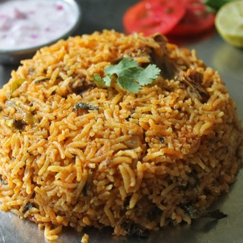

Home
Biryani Recipe
Chicken Biryani is a flavorful and aromatic Indian rice dish made with chicken, basmati rice, and a blend of spices. Here's a traditional recipe for Chicken Biryani along with the ingredients you'll need

My Recipe
Ingredients needed:
For Marinating the Chicken:
- 500 grams chicken, cut into pieces
- 1 cup yogurt (curd)
- 2 tablespoons ginger-garlic paste
- 1 teaspoon red chili powder
- 1 teaspoon turmeric powder
- 1 teaspoon garam masala
- 1 teaspoon coriander powder
- Salt to taste
- Juice of 1 lemon
- Fresh coriander leaves and mint leaves, chopped (for garnish)
For Cooking the Rice:
- 2 cups basmati rice, soaked for 30 minutes and drained
- 4-5 cups water
- 2-3 green cardamom pods
- 2-3 cloves
- 1-inch cinnamon stick
- Salt to taste
For Biryani Masala:
- 2 tablespoons ghee (clarified butter) or oil
- 2 onions, thinly sliced
- 2 tomatoes, chopped
- 2 green chilies, slit lengthwise
- 1 tablespoon ginger-garlic paste
- 1 teaspoon cumin seeds
- 1 teaspoon fennel seeds
- 1 bay leaf
- 1/2 teaspoon black peppercorns
- 1/2 teaspoon red chili powder
- 1/2 teaspoon turmeric powder
- 1/2 teaspoon garam masala
- Salt to taste
Optional Garnish:
- Fried onions
- Fried cashews and raisins
- Saffron strands soaked in warm milk
Instructions
Marinating the Chicken:
- In a large bowl, mix together yogurt, ginger-garlic paste, red chili powder, turmeric powder, garam masala, coriander powder, salt, and lemon juice.
- Add the chicken pieces to the marinade and coat them well. Cover and refrigerate for at least 1 hour or overnight for best results.
Cooking the Rice:
- In a large pot, bring water to a boil. Add the soaked and drained basmati rice, green cardamom pods, cloves, cinnamon stick, and salt.
- Cook the rice until it's 70-80% done (parboiled). Drain the excess water and set aside.
Preparing the Biryani Masala:
- Heat ghee or oil in a large skillet or pan over medium heat.
- Add sliced onions and sauté until they turn golden brown.
- Add cumin seeds, fennel seeds, bay leaf, black peppercorns, and sauté for a minute until fragrant.
- Stir in ginger-garlic paste and green chilies, and sauté until the raw smell disappears.
- Add chopped tomatoes and cook until they turn soft and mushy.
- Add red chili powder, turmeric powder, garam masala, and salt. Mix well.
Assembling the Biryani:
- In a heavy-bottomed pot or pressure cooker, spread a layer of cooked rice at the bottom.
- Arrange the marinated chicken pieces over the rice.
- Spread half of the biryani masala over the chicken layer.
- Repeat the layers with the remaining rice and biryani masala.
- Optionally, sprinkle fried onions, cashews, and raisins over the top layer.
- Drizzle saffron milk over the biryani for added aroma and color.
- Cover the pot with a tight-fitting lid and cook on low heat for 20-25 minutes until the chicken is fully cooked and the rice is tender.
- Once done, gently fluff up the biryani with a fork and garnish with chopped coriander leaves and mint leaves.
- Serve hot with raita (yogurt salad) or mirchi ka salan (spicy chili curry).